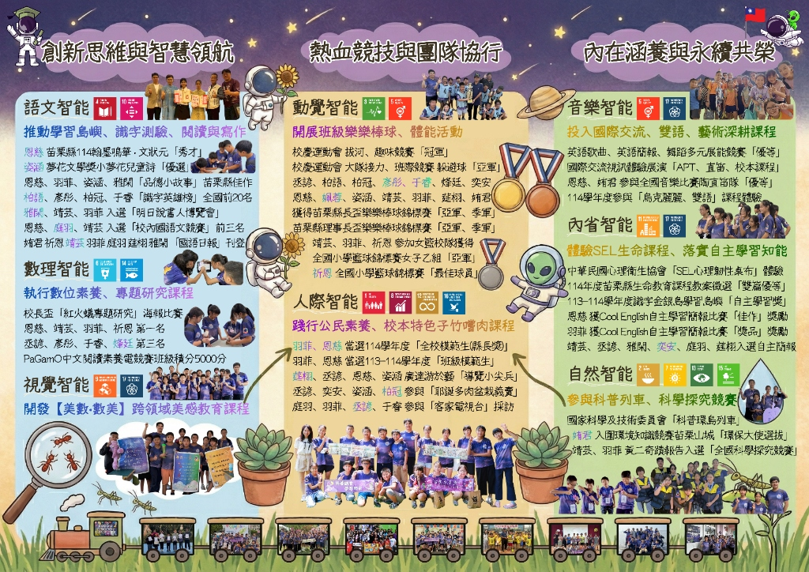

🏆 🏅 永貞六甲多元展能全人全隊殊榮 · 苗栗縣長盃/理事長盃雙亞軍 · 全國科探入選 · 識字英雄榜全國前20
多元智能 × SDGs 永續學習地圖 × 全人全方位展能
永貞六甲多元智能×SDGs永續學習地圖：築夢踏實，夢想起飛
1位導師與17位孩子 · 八大多元智能全面綻放 · 17項 SDGs 航向永續未來
📖 專題設計緣起與核心精神
由徐秉鴻導師帶領苗栗縣頭份市永貞國民小學六年甲班（YES 601），以 Howard Gardner 八大多元智能（語文、邏輯數學、空間、肢體動覺、音樂、人際、內省、自然）為核心航道，深度扣連聯合國 17 項永續發展目標（SDGs）。「攜手共同養育每種可能，讓孩子自信地多元展能，以成為改變世界的量能。」全班17位孩子各自在專屬的軌道上綻放閃耀光芒，涵蓋語文文狀元、兒童詩優選、全國科探、紅火蟻專題、全縣樂樂棒雙亞軍、全國小學女籃亞軍與最佳球員、多肉愛心義賣、SEL生命教育與科普環島列車！
# 多元智能 # SDGs永續學習地圖 # 永貞六甲 # 1位導師17位孩子 # 八大智能 # 全人展能 # HowardGardner # 不遺漏任何一人
✨ 實體官方摺頁數位典藏 · 100% 原始畫質
🗺️ 永貞六甲多元智能×SDGs永續學習地圖摺頁展廳 點擊切換折頁「內頁全景（八大智能成果地圖）」或「外頁全景（封面、五大亮點與導師簡歷）」，點擊圖片即可開啟高解析燈箱放大檢視。
🗺️ 檢視折頁內頁（成果地圖）
📘 檢視折頁外頁（封面與導覽）
🗺️ 折頁內頁全景：創新思維與智慧領航 · 熱血競技與團隊協行 · 內在涵養與永續共榮（八大多元智能完整實踐）
🧭 三大跨域導覽軸線
將 Howard Gardner 八大智能整合成三大動態實踐軸線，深度鏈結聯合國永續發展指標（SDGs）：
🚀 創新思維與智慧領航
語文智能 數理智能 視覺空間智能
融合閱讀寫作、文狀元秀才、紅火蟻專題研究與【美數·數美】幾何美感探究，啟發學童獨立思辨與數位素養。
🏃 熱血競技與團隊協行
肢體動覺智能 人際智能
拔河趣味競賽雙冠、縣長盃/理事長盃樂樂棒雙亞軍、全國小學女籃亞軍與最佳球員，落實多肉公益義賣與全校模範生典範。
🌿 內在涵養與永續共榮
音樂智能 內省智能 自然智能
陶笛重奏優等、國際雙語視訊展演、SEL心理韌性生命教育、科普環島列車關主與全國科學探究競賽入選。
🧠 八大多元智能 × SDGs 深度實踐矩陣
每一種智能均對應聯合國永續指標（UN SDGs），詳實記錄全班學童在各領域的卓越表現與獲獎榮耀：
💡 智能核心定義：善於表達與理解語言
🚩 班級推動主軸：推動學習島嶼、識字測驗、閱讀與寫作
恩慈 ：苗栗縣114翰墨鳴華·文狀元「秀才」姿涵 ：夢花文學獎小夢花兒童詩「優選」恩慈、羽菲、姿涵、雅閑 ：「品德小故事」苗栗縣佳作柏語、彥彤、柏冠、千香 ：「識字英雄榜」全國前20名雅閑、靖芸、羽菲 ：入選「明日說書人博覽會」恩慈、庭翊、靖芸 ：入選「校內國語文競賽」前三名姍君、祈恩、靖芸、羽菲、庭翊、建翔、雅閑 ：作品屢登《國語日報》刊登
💡 智能核心定義：擅長推理與數字運算
🚩 班級推動主軸：執行數位素養、專題研究課程
校長盃「紅火蟻專題研究」海報比賽 ：• 第一名：恩慈、靖芸、羽菲、祈恩 • 第三名：丞諺、彥彤、千香、烽廷 PaGamO 中文閱讀素養電競賽 ：班級積分突破 5,000 分大關
💡 智能核心定義：能在腦中建構空間影像
🚩 班級推動主軸：開發【美數·數美】跨領域美感教育課程
教育部跨領域美感卓越領航計畫「標竿學校」核心實踐方案 全班原創創作 327+ 件 藝術品（蒙德里安小夜燈、星際自畫像、老屋顏壓花玻璃、幾何四面體風箏） 六甲學童親自擔任成果展美感說課導覽小尖兵，向全校師生及清大羅仕龍教授解說
💡 智能核心定義：善於運用身體表達與操控物品
🚩 班級推動主軸：開展班級樂樂棒球、體能活動
全校校慶運動會 ：拔河競賽、趣味競賽「冠軍」雙冠王全校校慶運動會 ：大隊接力、班際躲避球「亞軍」丞諺、柏語、柏冠、彥彤、千香、烽廷、奕安、恩慈、佩蓉、姿涵、靖芸、羽菲、建翔、姍君 ：身穿 SDGs 戰袍榮獲苗栗縣長盃樂樂棒球錦標賽「亞軍、季軍」、理事長盃「亞軍、季軍」靖芸、羽菲、祈恩 ：出戰全國小學籃球錦標賽女子乙組勇奪「全國亞軍」祈恩 ：榮膺全國小學籃球錦標賽「最佳球員」
💡 智能核心定義：能理解與他人互動
🚩 班級推動主軸：踐行公民素養、校本特色子竹嚐肉課程
羽菲、恩慈 ：當選114學年度「全校模範生（縣長獎）」羽菲、恩慈 ：當選113-114學年度「班級模範生」芷翔、丞諺、恩慈、姿涵 ：廣達游於藝「導覽小尖兵」丞諺、奕安、姿涵、柏冠 ：參與「耶誕多肉盆栽愛心義賣」捐助弱勢庭翊、羽菲、丞諺、千香 ：接受「客家電視台」新聞專題深度採訪報導
💡 智能核心定義：對節奏、音調與音色敏感
🚩 班級推動主軸：投入國際交流、雙語、藝術深耕課程
英語歌曲、英語簡報、舞蹈多元展能競賽榮獲「優等」 國際交流視訊體驗展演（APT、直笛、校本特色課程） 恩慈、娉珺 ：參與全國音樂比賽陶笛重奏榮獲「優等」114學年度全班參與「烏克麗麗、雙語」沉浸式深耕體驗
💡 智能核心定義：善於自我反省與理解自身
🚩 班級推動主軸：體驗SEL生命課程、落實自主學習知能
中華民國心理衛生協會「SEL 心理韌性桌布」深度探索 114年度苗栗縣生命教育課程教案徵選榮獲「雙篇優等」 113-114學年度識字金銀島學習島嶼榮獲「自主學習獎」 恩慈 ：獲 Cool English 自主學習簡報比賽「佳作」獎勵羽菲 ：獲 Cool English 自主學習簡報比賽「獎品」獎勵靖芸、丞諺、雅閑、奕安、庭翊、芷翔 ：入選自主簡報發表
💡 智能核心定義：善於觀察與分類自然界的事物
🚩 班級推動主軸：參與科普列車、科學探究競賽
國家科學及技術委員會「2025臺灣科普環島列車」苗栗站擔任科學關主 娉珺 ：入圍環境知識競賽苗栗山城「環保大使選拔」靖芸、羽菲 ：本土昆蟲探究《竹節蟲黃二的生命奇蹟》入選「全國科學探究競賽」
⭐ 永貞六甲 17 位學童全人展能星光名冊
不遺漏任何一人（Leave No One Behind），每一位孩子都在自己擅長的跑道上創下耀眼的個人與團隊成就：
✨ 饒恩慈
（文狀元秀才 · 紅火蟻第一名 · 品德小故事佳作 · 陶笛重奏優等 · 全校模範生縣長獎 · Cool English佳作）
✨ 鍾姿涵
（夢花文學獎兒童詩優選 · 品德小故事佳作 · 廣達導覽小尖兵 · 樂樂棒全縣雙亞軍 · 多肉愛心義賣）
✨ 陳羽菲
（全校模範生縣長獎 · 紅火蟻第一名 · 女籃全國亞軍 · 國語日報刊登 · 品德小故事佳作 · 客家電視台專訪）
✨ 陳祈恩
（全國小學籃球錦標賽最佳球員 · 女籃全國亞軍 · 紅火蟻第一名 · 國語日報刊登）
✨ 高靖芸
（女籃全國亞軍 · 紅火蟻第一名 · 竹節蟲全國科探入選 · 明日說書人 · 國語日報刊登 · 樂樂棒雙亞軍）
✨ 鍾柏語
（識字英雄榜全國前20名 · 樂樂棒全縣雙亞軍）
✨ 林彥彤
（識字英雄榜全國前20名 · 紅火蟻第三名 · 樂樂棒全縣雙亞軍）
✨ 徐柏冠
（識字英雄榜全國前20名 · 樂樂棒全縣雙亞軍 · 多肉愛心義賣）
✨ 劉千香
（識字英雄榜全國前20名 · 紅火蟻第三名 · 樂樂棒全縣雙亞軍 · 客家電視台專訪）
✨ 黃雅閑
（品德小故事佳作 · 明日說書人 · 國語日報刊登 · 自主簡報）
✨ 曾庭翊
（國語日報刊登 · 校內語文競賽前三名 · 客家電視台專訪 · 自主簡報）
✨ 張姍君
（國語日報刊登 · 樂樂棒全縣雙亞軍）
✨ 邱建翔
（國語日報刊登 · 樂樂棒全縣雙亞軍）
✨ 羅丞諺
（紅火蟻第三名 · 樂樂棒雙亞軍 · 廣達導覽小尖兵 · 多肉義賣 · 客家電視台專訪）
✨ 江烽廷
（紅火蟻第三名 · 樂樂棒全縣雙亞軍）
✨ 林奕安
（樂樂棒全縣雙亞軍 · 多肉愛心義賣 · 自主簡報）
✨ 鍾佩蓉
（樂樂棒全縣雙亞軍）
✨ 曾芷翔
（廣達導覽小尖兵 · 自主學習簡報）
✨ 劉娉珺
（全國音樂比賽陶笛重奏優等 · 環保大使選拔入選）